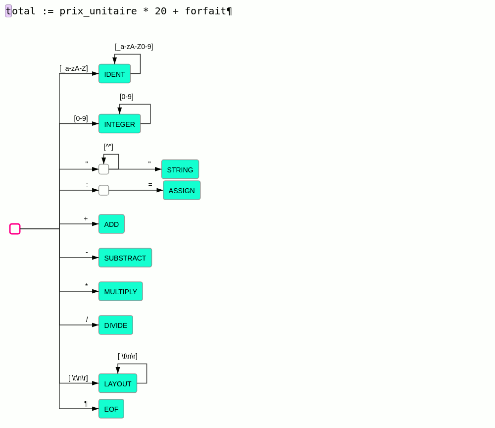
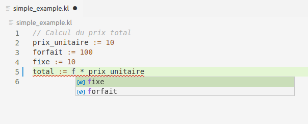
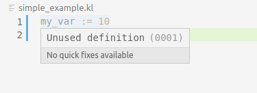
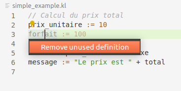

Introduction
Les DSL (Domain Specific Language) sont partout, nous les utilisons tous les jours sans vraiment s'en rendre compte (SQL, Maven, Ansible, etc. encore plus d'exemples). Les méthodologies de conception telles que le DDD (Domain Driven Design) invitent a représenter le domaine métier au travers d'un langage clairement défini : un DSL. Les DSL ont donc pour but de nous rendre plus productif en se concentrant sur l'essentiel. Mais l'accroissement du nombre de langage à apprendre et à maîtriser peut rendre la tâche ardue.
Le DSL doit être accompagné de l'outillage permettant un apprentissage rapide. Dans l'ère post-IntelliJ1, cet outillage doit au minimum :
- afficher des erreurs à la frappe,
- fournir une complétion de code intelligente,
- permettre des refactorings.
Types de DSL
Pour une analyse plus en profondeur de l'utilisation des langages spécifiques et de l'outillage associé, je vous invite à lire l'article de Martin Fowler.
Voici pour résumer les différentes implémentations possibles d'un DSL.
DSL Interne
Un DSL interne utilise la syntaxe de votre langage hôte (Java, Groovy, Python, etc.), l'outillage est donc le même. Par contre en fonction des capacités du langage hôte, l'expressivité peut être limitée et il est souvent difficiles d'exprimer des constructions complexes (vérification de contraintes liées aux données, etc.).
DSL externe :
Langage valise
La grande tendance a été d'utiliser des langages comme XML, JSON et maintenant YAML comme DSL, certainement pour leur outillage standard (grand nombre de bibliothèque de lecture/écriture). Ces outils sont aussi leur faiblesse, même s'ils possèdent parfois la notion de schéma, ils n'ont pas été conçus pour aider les utilisateurs avec la sémantique spécifique des langages métiers.
Finalement ces syntaxes clés en main contiennent :
- plus de bruit que de contenu (XML)
- des constructions alternatives ambiguës (YAML).
Langage propre
L'écriture d'analyseurs spécifiques à un langage (lexer/parser) est perçue par la plupart des développeurs comme une tâche compliquée voire intimidante, certainement une réminiscence des cours de compilation qui avait pour objectifs d'expliquer les techniques de compilation pour un language généraliste. La portée d'un DSL (comme son nom l'indique) est bien plus restreinte et les techniques misent en œuvre pour l'analyser suivent la même tendance.
Nombre d'outils sont disponibles pour aider à la réalisation de lexer/parser (flex, bison, ANTLR, etc.). Ces outils permettent d'être rapidement productif, mais deviendront à un moment ou un autre également le facteur limitant :
- ils n'aident pas vraiment à comprendre la théorie (malheureusement indispensable) de l'analyse de langage (LL/LR, récursivité à gauche, etc.)
- il est souvent difficile de comprendre le fonctionnement du code qu'ils produisent et offrent un débogage limité
- et il est difficile, voire impossible, de personnaliser leur fonctionnement pour les faire correspondre à vos besoins précis. En particulier la gestion robuste des erreurs qui se produisent systématiquement dans le cas d'une analyse interactive où l'utilisateur écrit son code progressivement.
Il est en fait souvent plus simple d'écrire son propre lexer/parser pour des petits langages comme les DSL. Cela permet de réaliser l'ensemble des modifications nécessaires aux spécificités du traitement interactif grace à un code 100% maîtrisé. Et nous allons voir qu'en quelques étapes il est possible d'obtenir un outillage robuste et puissant pour un petit DSL.
Objectifs
Les objectifs ambitieux mais réalisables sont :
- Écrire l'outillage pour aider à l'écriture d'un petit DSL, avec entre autre :
- affichage des erreurs à la frappe
- complétion de code
- refactoring
- Intégration de l'outillage dans VSCode ou une application Web.
«post-IntelliJ» est le terme utilisé par Martin Fowler, je n'ai personnellement aucun a priori, remplacez par votre IDE à tout faire préféré!
Préparation du projet
Pour mener à bien vôtre mission quelques outils vous seront nécessaires:
Commencez par cloner la souche du projet:
git clone https://github.com/madbrain/kale-language-server.git
Ce projet contient tout le nécessaire pour construire l'outillage d'analyse de notre language. Le développement sera guidé par des tests découpés en différentes étapes progressives, à chaque étape de nouveaux tests nous amènent à écrire une nouvelle fonctionnalité.
Le projet contient:
src, les sources de l'analyseur sur lesquelles nous allons nous concentrer durant le tutoriel ;bin, les programmes exécutables qui vont nous permettre d'exploiter le langage (un interpréteur en fait).examples, quelques exemples de notre DSL.
Les sources sont écrite principalement en Typescript ce qui permet de les utiliser sans adaptation à la fois dans une application Web et aussi comme une extension VSCode. Cependant aucun framework exotique n'est utilisé et il est extrêmement simple d'appliquer les mêmes techniques avec n'importe quel langage de votre choix.
Pour démarrer le tutoriel il faut commencer par créer une branch à partir du tag step-1.1 :
git checkout -b tutoriel step-1.1
Il faut ensuite installer l'ensemble des dépendances nécessaire au tutoriel, pour cela exécutez la commande suivante:
npm install
À chaque étape il faut compléter le code afin que l'ensemble des tests soit vert :
npm test
Quand c'est le cas, il faut passer à l'étape suivante en fusionnant le tag suivant :
git merge step-1.2
Si vous bloquez, vous pouvez consulter la solution proposée à chaque étape sur le tag correspondant,
par exemple la solution de l'étape step-1.1 se trouve au tag solution-step-1.1.
Présentation du langage Kale1
Le département comptabilité de votre entreprise réalise des calculs extrêmement complexes pour lesquels les formules Excel ont atteint leur limites (depuis le temps qu'on le dit...) et vous a missionné pour concevoir un langage simple mais facile à utiliser qui leur permettra de simplifier leur dur labeur.
Voici le langage que vous avez conçu, il permet d'exprimer des calculs à l'aide
d'expressions arithmétiques et de variables, la variable message sera affichée à l'écran :
// Calcul du prix total
prix_unitaire := 10
forfait := 100
total := prix_unitaire * 20 + forfait
message := "Le prix est " + total
Ce langage va être analysé en plusieurs étapes :
- découpage du texte en mots : analyse lexicale
- structuration des mots en phrases : analyse grammaticale
- vérification du sens des phrases : analyse sémantique
Chaque étapes repose sur les résultats produits à l'étape précédente.
l'origine de ce nom reste un mystère : un chanteur de blues, un légume hype, le Kangooroo Arithmetic Language Evaluator ? qui sait...
Analyseur lexical
Principe
L'analyseur lexical a pour but de produire à partir d'un texte un flux de mots ou plus précisément de lexèmes (token).
À la différence des langues naturels qui évoluent et se complexifient de façon organique au grès des usages, les langages informatiques sont conçus avec l'idée qu'ils doivent être analysables par un algorithme. Et cet algorithme doit autant que possible être le plus simple possible. Pour modéliser l'analyse lexicale les expressions régulières sont classiquement utilisées.
Principe de l'analyse lexicale :
- le texte est lu caractère par caractère en partant du début
- à chaque caractère lu l'analyseur change d'état
- à chaque transition dans un nouvel état, l'analyseur nous indique :
- si le texte lu est identifié comme un lexème connu
- si le texte lu ne peut en aucun cas correspondre à un lexème connu et qu'il est donc en erreur
- sinon l'analyse continue
- à chaque lexème trouvé, l'analyseur reprend dans l'état initial
- par défaut l'analyseur essaie de trouver les lexèmes les plus long possible.
Ce principe est illustré par l'animation suivante :

Implémentation
Les lexèmes sont représentés par les définitions suivantes :
interface Token {
type: TokenKind;
value?: string;
}
enum TokenKind {
IDENT = "IDENT",
INTEGER = "INTEGER",
STRING = "STRING",
// ...
}
Le lexer se construit à partir d'une chaîne de caractères contenant le texte à analyser,
la variable position indique la position du prochain caractère à consommer.
Chaque appel à la méthode nextToken renvoie le lexème suivant trouvé à partir de position.
Les trois méthodes atEnd, getChar et putBackChar permettent de manipuler le flux de caractères.
class Lexer {
private position = 0;
constructor (private content: String) {}
nextToken(): Token {
raise Error("TODO: not complete");
}
private atEnd() {
return this.position >= this.content.length;
}
private getChar() {
return this.content[this.position++];
}
private putBackChar() {
this.position--;
}
}
L'automate des états de l'analyseur est implémenté dans la méthode nextToken :
- les transitions sont implémentées avec une échelle de
if/else if - dans chaque
ifcorrespondant à une transition, on y trouve le code de l'état correspondant :- soit l'état correspond à un lexème possible alors ce lexème est retourné
- soit des transitions sont possibles et l'analyse continue
- sinon une erreur est déclenchée
- les boucles sont implémentées par des boucles de type
while(logique non?)
L'implémentation de la méthode nextToken peut suivre la structure suivante :
nextToken(): Token {
if (this.atEnd()) {
return { kind: TokenKind.EOF };
}
const c = this.getChar();
if (isDigit(c)) {
return this.integer(c);
} else if (c == ':') {
if (this.getChar() == '=') {
return { kind: TokenKind.ASSIGN };
}
this.pustBackChar();
} else {
throw Error("TODO: not complete");
}
throw Error(`Unexpected char '${c}'`);
}
Le test d'une classe de caractères peut être factorisé dans des fonctions utilitaires, comme par exemple :
function isDigit(c: string) {
return c >= '0' && c <= '9';
}
function isSpace(c: string) {
return c == ' ' || c == '\t' || c == '\n' || c == '\r';
}
Les caractères correspondant à la classe LAYOUT sont ignorés et ne génèrent pas de token.
Résultats
Une fois que l'ensemble des tests de l'étape step-1.1 passent au vert (npm test), il est possible de tester concrètement
le résultat de cette étape en compilant le projet avec npm run build, puis en lançant la commande suivante sur l'un des exemples disponibles :
./bin/kale-interpreter examples/simple_example.kl
Le programme doit afficher la liste des tokens du fichier passé en paramètre.
Analyseur grammatical
Principe
Maintenant que vous disposez d'un analyseur lexical capable de découper le code source en lexèmes, il est tant d'en extraire la structure. Comme pour les langages naturels, le concept de grammaire est utilisé pour décrire la structure du langage.
Voici la définition de la grammaire du langage Kale :
KaleFile ::= Assignment* EOF
Assignment ::= IDENT ASSIGN Value
Value ::= MulDivValue ( epsilon | (+ | -) MulDivValue )*
MulDivValue ::= AtomValue ( epsilon | (* | /) AtomValue )*
AtomValue ::= INTEGER | IDENT | STRING
Les éléments de la grammaire entièrement en majuscule (ie. INTEGER) correspondent aux lexèmes et sont appelés les terminaux.
Les autres éléments sont les non-terminaux et représentent le résultat des règles qui structurent le langage.
La grammaire se lit de cette façon :
- la règle
Assignment ::= IDENT ASSIGN Valuesignifie que la séquence formée deIDENT,ASSIGNetValuepeut se réduire àAssignment; |indique une alternative, ie.INTEGERouIDENTouSTRINGpeuvent se réduire àAtomValue. Ceci est équivalent à avoir écrit séparément les règles suivantes :
AtomValue ::= INTEGER
AtomValue ::= IDENT
AtomValue ::= STRING
*indique que l'élément précédent peut être répété 0 ou plusieurs fois ;- les parenthèses servent à préciser les priorités des opérations ;
epsilonreprésente la séquence vide c.-à-d. l'absence d'éléments.
La structure résultant de l'analyse du language est définie dans le fichier ast.ts : chaque interface correspond
à une règle de la grammaire .
Il faut maintenant définir la machine capable d'extraire la structure à partir de cette grammaire : le parser. Les parsers sont classés en fonction de la complexité du langage qu'ils sont capable de reconnaître. Les parsers les plus simples à implémenter sont ceux dit LL(1).
Attention ce type de parser ne permet pas d'être utilisé avec n'importe qu'elle grammaire :
elle ne doit pas contenir de règles récursives à gauche et être factorisé.
Mais pas d'inquiétude, cette grammaire a été écrite pour être de type LL(1)
(d'où les règles Value et MulDivValue écrites d'une façon pas très naturelle).
Implémentation
Voici la structure générale du parser :
class Parser {
private token: Token;
constructor(private lexer: Lexer) {
this.token = this.scanToken()
}
parseFile(): KaleFile {
throw new Error("TODO: not complete");
}
private scanToken() {
this.token = this.lexer.nextToken();
return this.token;
}
private test(kind: TokenKind) {
if (this.token.kind == kind) {
this.scanToken();
return true;
}
return false;
}
private expect(kind: TokenKind) {
if (this.token.kind != kind) {
throw new Error(`Expecting token ${kind}, got ${this.token.kind}`);
}
this.scanToken();
}
}
Les parsers de type LL(1) peuvent être écrit sous la forme d'un automate procédurale, c.-à-d. que chaque
non-terminal de la grammaire est décrit par une méthode du parser. Par exemple la règle Assignment ::= IDENT ASSING Value
va se traduire en :
class Parser {
private parseAssignment(): Assignment {
const variable = this.parseIdent();
this.expect(TokenKind.ASSIGN);
const value = this.parseValue();
return { variable, value };
}
}
Si lors de l'analyse d'un non-terminal peut se poursuivre par plusieurs types de lexèmes : ils seront tout à tour tester avec la fonction test.
Les répétitions dans la grammaire représentées par * deviennent des boucles dans le parser.
Résultat
Une fois que l'ensemble des tests de l'étape step-1.2 passent au vert (npm test), il est possible de tester
le résultat du parser sur les fichiers d'exemples (après compilation avec npm run build) :
./bin/kale-interpreter examples/simple_example.kl
Le programme doit maintenant afficher l'arbre de syntaxe au format Json.
Interpréteur
Principe
Un fois l'arbre de syntaxe obtenu avec le parser, il est possible de l'interpréter afin d'obtenir le résultat réel du calcul. Pour les puristes, l'interpréteur peut se définir à partir de la sémantique opérationnelle suivante:
$$ \frac{\langle E,s\rangle \Rightarrow V}{\langle L:=E,,,s\rangle\longrightarrow (s\uplus (L\mapsto V))} $$
$$ \frac{\langle E_1,s\rangle \Rightarrow V_1,\langle E_2,s\rangle \Rightarrow V_2}{\langle E_1 op E_2,s\rangle\longrightarrow (V_1 op V_2)} $$
$$ \frac{}{\langle I,s\rangle\longrightarrow (I)} $$
$$ \frac{}{\langle S,s\rangle\longrightarrow (S)} $$
$$ \frac{(L\mapsto V) \in s}{\langle L,s\rangle\longrightarrow (V)} $$
$$ \frac{\langle A_1,s\rangle \longrightarrow s'}{\langle A_1 A_2,s\rangle \longrightarrow \langle A_2,s'\rangle} $$
$$ \frac{(message\mapsto V) \in s}{\langle ,s\rangle \longrightarrow print(V)} $$
Si ce charabia mathématique n'a aucun sens pour vous : c'est pas grave ! Les définitions ci-dessus comportent de plus certainement quelques erreurs, mais il est important d'avoir une idée des outils standards utilisés dans la conception de langages. En effet un bon langage doit reposer sur des bases solides et la définition formelle de sa sémantique en est une.
Globalement les règles ci-dessus indiquent que tout au long de l'évaluation du programme un état \(s\) va être lu et mis à jour.
De façon concrète cet état est du type Map<string, string | number> et permet de stocker le résultat de l'évaluation des affectations.
La sémantique indique également que :
- les affections sont évaluées dans l'ordre dans lequel elles apparaissent dans le fichier
- la valeur de l'affectation est calculée par évaluation des opérations
- la valeur d'une variable est lue depuis l'état
- et à la fin la valeur de la variable
messageest affichée.
Résultat
Une fois que l'ensemble des tests de l'étape step-1.3 passent au vert, il est possible de tester
le résultat de l'interpréteur sur les fichiers d'exemples :
./bin/kale-interpreter example/simple_example.kl
Le programme affiche maintenant le résultat de l'évaluation tant attendu, hourra !.
Observations
Mais pas si vite ! que se passe t-il si l'on essaye d'évaluer les programmes suivants :
message := 30 @ "tutu"
message := 30 + / "tutu"
message := 30 * "tutu"
Dans les deux premiers cas il plante lamentablement avec une indication d'erreur pas très explicite : est-ce une erreur dans le programme évalué ou un bug dans l'interpréteur ? Il est clair qu'il y a respectivement une erreur lexicale et grammaticale dans les programmes d'exemples. Mais à part le message, l'interpréteur ne nous donne aucune information de position (ligne, colonne) : imaginer trouver l'erreur dans un programme de taille plus conséquente.
Les experts Javascript peuvent trouver le résultat de la dernière évaluation correct, par contre pour vos clients ça n'a aucun sens de multiplier un nombre et une chaîne de caractères et l'interpréteur devrait clairement l'indiquer, tout comme utiliser une variable non définie, etc..
Il serait également intéressant que l'évaluateur soit robuste et soit capable d'indiquer l'ensemble des erreurs d'un programme et pas juste la première1. Par exemple dans le programme suivant :
my_var := 30 + / 50
message := "resultat : " + my_other_var
Il doit être capable d'indiquer une erreur au niveau du symbole / et que dans la deuxième expression il est fait référence
à la variable my_other_var non définie.
Dans la seconde partie du tutoriel nous allons rendre l'interpréteur robuste à tout types d'erreur et lui donner un rapport d'erreur précis.
notre objectif est l'aide à l'écriture de code et contrairement à l'évaluation un programme, cela peut passer par des phases où il contient beaucoup d'erreurs (ie. pendant les phases de réfactoring).
Meilleur reporting
Afin de faciliter l'apprentissage du langage, il est important de donner un diagnostiques précis des erreurs et en particulier indiquer la position de l'erreur : la ligne voire mieux l'intervalle dans la ligne en erreur.
Les utilisateurs peuvent à tout moment éditer un texte en erreur. Si l'erreur est située avant leur position d'édition l'analyse s'arrête et ils n'auront alors aucune information de potentielles erreurs à la position d'édition. Il est donc important d'avoir une analyse suffisamment robuste pour pouvoir indiquer le maximum d'erreurs possibles à l'utilisateur et en particulier à la position d'édition.
Positionnement
interface Position {
offset: number;
line: number;
character: number;
}
interface Span {
from: Position;
to: Position
}
Les informations ligne/character et offset paraissent redondantes mais chaque éditeur de texte gère le positionnement dans le texte de façon différente :
- le language Server Protocol utilisé par VSCode n'accepte que ligne/colonne ;
- Codemirror accepte plutôt ligne/colonne, mais des fonctions de conversion existent ;
- le positionnement brut dans un fichier est plus aisé avec l'offset.
C'est donc une bonne pratique d'utiliser le triplet ligne/colonne/offset pour le positionnement dans le texte.
Rapport d'erreurs multiples
Pour rapporter les erreurs, les différentes phases de l'analyse disposent d'un objet du type suivant :
interface ErrorReporter {
reportError(span: Span, message: string);
}
Description des outils de test
Afin de simplifier l'écriture des tests la fonction utilitaire code est utilisée pour définir à la fois le code à analyser
ainsi que la position de marqueurs (@{1}, @{2}, etc.). Ces marqueurs sont ensuite utilisés pour comparer avec les positions
fournies par le résultat de l'analyse.
Robustesse du lexer
Etape 1 : Ajout du positionnement des lexèmes
step-2.1
Chaque lexème dispose maintenant d'un champ span qui reflète sa position exacte dans le fichier :
export Token {
span: Span;
kind: TokenKind;
value?: string;
}
Les méthodes getChar et putBackChar doivent comptabiliser les positions (ligne et colonne)
à chaque fois qu'elles renvoient ou reprennent un caractère. Attention lorsque putBackChar reprend un retour chariot :
il faut retourner à la fin de la ligne précédente !
Etape 2 : Robustesse
step-2.2
Afin d'être robuste, le lexer ne peut plus s'arrêter par une exception. Cela se produit sur deux types d'erreurs possibles :
- soit il a commencé à lire un lexème mais il ne se termine pas correctement (ie. une chaîne de caractères sans délimiteur de fin) alors une erreur est rapportée mais le lexème est retourné avec la portion déjà lu. S'il y a plusieurs types de lexème possibles, le type est choisi arbitrairement.
- soit le caractère lu ne correspond à rien alors une erreur est rapportée et l'analyse reprend à l'état initial, ce qui a pour effet d'ignorer le(s) caractère(s) en erreur.
Résultat
Le lexer ne s'arrête plus à la première erreur et rapporte précisément l'erreur. Par exemple sur le programme suivant :
my_var := 10 @ + 30
message := "result :
L'interpréteur affiche maintenant le diagnostic d'erreur suivant :
my_var := 10 @ + 30
^
[0] Unknown character(s)
message := "result :
^^^^^^^^^
[1] Unterminated string
Robustesse du parser
Etape 1 : Ajout du positionnement de l'arbre de syntaxe
step-2.3
Chaque nœud de l'arbre de syntaxe dispose maintenant d'un champ span qui reflète sa position exacte dans le fichier :
export AstNode {
span: Span;
}
La fonction mergeSpan est bien utile pour obtenir l'intervalle complet d'un nœud à partir de ses fils ou des lexèmes.
Etape 2 : Robustesse
step-2.4
Actuellement lors d'une erreur de syntaxe le parser s'arrête avec une exception, il nous faut être capable de rapporter l'erreur
mais d'être capable de continuer l'analyse sur le reste du code.
Pour cela, la technique la plus simple est celle du panic mode.
Cette technique consiste, en cas d'erreur, à ignorer les lexèmes du flux
à la recherche d'un lexème de synchronisation. Les lexèmes de synchronisation sont choisis de telle sorte que
si l'analyse reprend à cet endroit elle a de grandes chances de se dérouler correctement.
L'analyse reprends avec la règle adéquate en fonction du lexème de synchronisation :
par exemple dans le langage C, le lexème qui suit ; permet de redémarrer l'analyse au début d'une instruction.
Il est également possible d'insérer/modifier le(s) lexème(s) attendu(s) en espérant que l'analyse reprenne correctement, par exemple en ajoutant une accolade de fin de bloc. Faire le bon choix entre les différentes modifications requiert généralement de tester les différentes solutions et de choisir celle qui mène l'analyse la plus au delà de l'erreur précédente. Ce mode de reprise sur erreur est plus performant en termes de capacité de récupération, mais est bien plus compliqué que le simple panic mode.
Deux nouvelles méthodes utilitaires du parser sont nécessaires :
private recoverWith<T>(syncTokens: TokenKind[], start: Span,
makeError: (span: Span) => T, parseFunc: () => T): T {
try {
return parseFunc();
} catch(e) {
const tokens = this.skipTo(syncTokens);
const range = tokens.length > 0 ? mergeSpan(start, tokens[tokens.length-1].span) : start;
return makeError(range);
}
}
private skipTo(syncTokens: TokenKind[]): Token[] {
const tokens: Token[] = []
while (! (this.token.kind == TokenKind.EOF || syncTokens.indexOf(this.token.kind) >= 0)) {
tokens.push(this.token);
this.scanToken();
}
return tokens;
}
La méthode recoverWith permet de protéger l'exécution du bloc de code d'analyse parseFunc et, en cas d'erreur
pendant l'analyse, skipTo avance la lecture des lexèmes jusqu'à rencontrer un token de synchronisation ou EOF.
La fonction makeError permet de construire un nœud de syntaxe représentant le fait qu'il y a eu une erreur
sur l'intervalle en paramètre.
Par exemple lors de l'analyse d'une condition Condition ::= Expr EQUALS Expr, si une erreur survient pendant l'analyse
de la deuxième expression, on construit un nœud partiel contenant le maximum d'information accumulée jusque là :
private parseCondition(): Condition {
const startSpan = this.token.span;
const left = parseExpr();
expect(TokenKind.EQUALS);
return this.recoverWith(CONDITION_SYNC_TOKENS, startSpan, (endSpan) => {
return { span: mergeSpan(startSpan, endSpan), isOk: false, op: Relation.Equals, left };
}, () => {
const right = parseExpr();
return { span: mergeSpan(expr.span, right.span), isOk: true, op: Relation.Equals, left, right };
});
}
L'analyse reprendra sur un des lexèmes de CONDITION_SYNC_TOKENS. Cet ensemble de lexèmes doit permettre de redémarrer l'analyse comme
si le non-terminal Condition avait été émit et contient donc l'ensemble des lexèmes valides après ce non-terminal.
Chaque non-terminal a un ensemble de lexèmes de synchronisation différent et correspond aux fameux Follow Set. Si un non-terminal est utilisé dans des contextes très différents, son ensemble peut être spécialisé et réduit pour chaque règle où il est utilisé.
Voici pour notre grammaire le résultat du calcul des ensembles First et Follow :
First Set
First(KaleFile) = { IDENT }
First(Assignment) = { IDENT }
First(Value) = { INTEGER, IDENT, STRING }
First(MulDivValue) = { INTEGER, IDENT, STRING }
First(AtomValue) = { INTEGER, IDENT, STRING }
Follow Set
Follow(Assignment) = { IDENT, EOF }
Follow(Value) = { IDENT, EOF }
Follow(MulDivValue) = { ADD, SUBSTRACT, IDENT, EOF }
Follow(AtomValue) = { ADD, SUBSTRACT, MULTIPLY, DIVIDE, IDENT, EOF }
Résultat
Le parser ne s'arrête plus à la première erreur et rapporte précisément l'erreur. Par exemple sur le programme suivant :
my_var := 10 / + 30
my_other_var + 20
L'interpréteur affiche maintenant le diagnostic d'erreur suivant :
my_var := 10 / + 30
^
[0] Expecting STRING, got ADD
my_other_var + 20
^
[1] Expecting ASSIGN, got ADD
Sémantique du langage Kale
step-2.5
Comme vu lors des observations, il est possible d'écrire des programmes faux sans que l'interpréteur nous indique la présence d'erreurs (ie. opérations inconsistantes, variable non définie, etc.). Ce type de comportement non autorisé est généralement donné par la sémantique dénotationnelle. Pour (beaucoup) simplifier, contrairement à la sémantique opérationnelle qui définit l'évaluation du programme, la sémantique dénotationnelle permet de transformer le programme sous la forme d'une fonction mathématique (généralement à base de lambda-calcul). Cette transformation s'apparente plus à la compilation et est souvent utilisée comme spécification d'un compilateur.
En particulier, une des tâches de la sémantique est de typer précisément les différentes constructions du langage et d'identifier les incohérences de typage. Ceci se fait par un mécanisme d'inférence de types : le typage des variables se construit automatiquement à partir du typage de leur valeur.
Chaque construction équivalente au non-terminal Value de la grammaire ainsi que la définition des variables se voit affecter une valeur du type :
enum Type {
INTEGER,
STRING,
UNKNOWN
}
selon les règles suivantes :
- INTEGER pour les valeurs simples de type entier ou le résultat de toutes les opérations exécutées sur des opérandes de type ENTIER
- STRING pour les valeurs simples de type chaîne ou le résultat de l'opération
+ayant au moins un opérande de type STRING - UNKNOWN pour tous les autres cas, c.-à-d. :
- mauvais typage d'opération ;
- variable non définie ;
- construction du langage incomplète due à une erreur d'analyse grammaticale.
Grâce au typage, l'analyse sémantique peut rapporter les utilisations interdites des opérations -, * et /.
Résultat
Les programmes invalides ne sont plus exécutés et, par exemple, sur le programme suivant :
my_var := 10 / value
message := 20 * "30"
L'interpréteur affiche maintenant le diagnostic d'erreur suivant :
my_var := 10 / value
^^^^^
[0] Unknown variable 'value'
message := 20 * "30"
^^^^^^^^^
[1] Cannot use '*' on strings
Découverte des extensions VSCode
Nous disposons maintenant de tous les composants spécifiques à notre langage pour tenter de créer un support de langage intégré à VSCode.
Serveur de langage et protocole LSP
VSCode est à l'origine d'une architecture originale en ce qui concerne l'organisation du code d'une IDE, les aspects graphique et langage sont complètement séparés :
- un client graphique incluant des éditeurs, navigateurs, menus, etc. gère l'ensemble de l'interaction avec l'utilisateur ;
- des serveurs gèrent les analyses et traitements spécifiques à chaque langage ;
- le client et les serveurs communiquent par un protocole bien défini et ouvert : le Language Server Protocol.
Le protocole étant ouvert, il peut être implémenté par plusieurs éditeurs et permet ainsi à un serveur de langage d'être disponible pour l'ensemble de ces éditeurs. À l'inverse tout éditeur implémentant le protocole bénéficie immédiatement de tous les serveurs de langages existants. Le protocole est un protocole bidirectionnel basé sur JSON RPC et dans sa version la plus simple, le serveur communique avec le client par ses entrée/sortie standards (les versions plus élaborée acceptent d'autres canaux de communication comme les sockets TCP).
Découverte du protocole
Dans un premier terminal, lancez la commande suivante:
nc -Cl 5050
Elle permet d'ouvrir un socket TCP en écoute sur le port 5050 (-C permet de convertir les retours chariot en CRLF).
Dans un second terminal, dans un répertoire temporaire installez et lancez le serveur de langage Docker
(c'est un exemple, d'autres serveurs de langage peuvent être utilisés) :
npm install dockerfile-language-server-nodejs
./node_modules/.bin/docker-langserver --socket=5050
au lancement du serveur rien ne se passe : c'est au client d'envoyer le premier message. Copier dans le premier terminal
(celui qui exécute actuellement la commande nc) le message suivant au caractère prêt (depuis Content-Length jusqu'à la dernière }) :
Content-Length: 101
{"jsonrpc": "2.0", "id": 1, "method": "initialize", "params": { "capabilities": {"workspace": {}}}}
Le premier échange est une négociation de capacités, le client et le serveur échangent leurs fonctionnalités respectives. On peut ensuite simuler l'ouverture d'un fichier depuis le client :
Content-Length: 175
{"jsonrpc": "2.0", "method": "textDocument/didOpen", "params": { "textDocument": {"uri":"file:///tmp/Dockerfile","languageId":"dockerfile","version":1,"text":"HELLO tutu"}}}
Vous remarquerez que le message n'a pas d'identifiant : c'est une notification, aucune réponse n'est attendue. En réaction,
le serveur notifie le client qu'il a analysé le document et que ce dernier contient des erreurs : l'instruction HELLO est inconnue
et le document doit contenir une référence à une image avec l'instruction FROM. Le serveur est informé des modifications du document
en temps réel :
Content-Length: 247
{"jsonrpc": "2.0", "method": "textDocument/didChange", "params": { "textDocument": {"uri":"file:///tmp/Dockerfile","version":2}, "contentChanges": [{"range": {"start":{"line":0,"character":0},"end":{"line":0,"character":10}}, "text": "FROM "}]}}
C'est mieux : le document ne contient plus qu'une erreur. Il est possible de lui demander des propositions de complétion après le mot clé FROM :
Content-Length: 167
{"jsonrpc": "2.0", "id": 2, "method": "textDocument/completion", "params": { "textDocument": {"uri":"file:///tmp/Dockerfile"}, "position": {"line":0,"character":5}}}
Le document peut de nouveau être modifié :
Content-Length: 254
{"jsonrpc": "2.0", "method": "textDocument/didChange", "params": { "textDocument": {"uri":"file:///tmp/Dockerfile","version":2}, "contentChanges": [{"range": {"start":{"line":0,"character":0},"end":{"line":0,"character":10}}, "text": "FROM hello\n"}]}}
Il ne contient plus d'erreurs, on peut maintenant tenter une demande de complétion dans un autre contexte :
Content-Length: 167
{"jsonrpc": "2.0", "id": 2, "method": "textDocument/completion", "params": { "textDocument": {"uri":"file:///tmp/Dockerfile"}, "position": {"line":1,"character":0}}}
Le serveur nous propose maintenant l'ensemble des mots clés pouvant être utilisé à cet endroit du document.
Conclusion
Cette session montre qu'il est facile de communiquer avec un serveur de language, mais n'est pas des plus pratiques. Des bibliothèques implémentant le protocole existent dans à peu prêt tous les langages de programmation et vous permettent de ne plus manipuler le Json et les messages à la main.
Dans la partie suivante l'infrastructure minimale va être mise en place afin de réaliser un serveur de langage spécifique.
Serveur de langage Kale
step 3.1
Le serveur de langage repose sur la bibliothèque vscode-languageserver. Afin de disposer de ces nouvelles dépendances, lancez la commande :
npm install
L'objet principal qui centralise toute l'infrastructure du serveur est l'objet obtenu avec la fonction createConnection :
import { createConnection, ProposedFeatures } from "vscode-languageserver/node";
const connection = createConnection(ProposedFeatures.all);
/*
* ... more initialisations
*/
connection.listen();
Pour chaque requête ou notification à traiter l'objet connection propose un hook pour intercepter le message et dans le cas
d'une requête pouvoir envoyer la réponse. Par exemple :
import { InitializeParams, InitializeResult, TextDocumentSyncKind } from "vscode-languageserver";
connection.onInitialize((params: InitializeParams): InitializeResult => {
return {
capabilities: {
textDocumentSync: TextDocumentSyncKind.Incremental,
} as any
}
});
Le serveur doit garder une version des documents ouverts afin de suivre leur modifications. La bibliothèque vscode-languageserver
met à disposition la fonction TextDocument.create() pour créer des documents sur lesquels la fonction TextDocument.applyEdits()
permet d'appliquer les modifications. A chaque action sur un document (ouverture, changement et fermeture) le document doit être
validé avec notre lexer/parser/checker maison et les erreurs publiées sous forme de diagnostiques avec la méthode connection.sendDiagnostics().
Résultat
Ça y est votre serveur de langage est prêt ! Mais sans un vrai client graphique l'expérience est plutôt limitée. Dans le chapitre suivant une extension VSCode va être développée pour communiquer avec notre serveur.
Initialisation du projet d'extension VSCode
La première étape consiste à créer le projet correspondant à l'extension VSCode. La procédure est tirée de la documentation officielle de VSCode et utilise le générateur de code Yeoman.
npm install -g yo generator-code
yo code
Répondez aux questions dans l'ordre :
New Extension (Typescript)pour le type d'extensionKale Extensioncomme nom d'extensionkale-extensioncomme identifiant de l'extension- entrez une description
- et choisissez ou pas d'initialiser un dépôt Git
- enfin choisissez le gestionnaire de package npm
Le projet généré est un projet VSCode, ouvrez l'IDE avec la commande :
code kale-extension
Le fichier package.json est le point d'entrée de l'extension (l'extension elle même est un package Node).
Il déclare une nouvelle commande extension.sayHello et indique que l'extension est activée lorsque cette
commande est invoquée.
Tout le code de l'extension est dans le fichier src/extension.ts.
Il comporte deux fonctions obligatoires activate et deactivate.
La première, appelée au démarrage de l'extension, donne la définition de la commande qui permet d'afficher
le fameux message d'information Hello world!.
Démarrez l'extension comme indiqué dans la documentation en appuyant sur la touche F5.
Une nouvelle instance de l'IDE démarre avec la nouvelle extension disponible.
Lancer la commande Hello en appuyant sur F1 et en sélectionnant la commande : le message s'affiche dans un toaster.
Remarquer également l'affichage du log dans la console lors de l'activation de l'extension.
Définition des contributions de l'extension
Notre extension va permettre de gérer un nouveau type de fichier, il faut pour
cela remplacer la section contributes dans le fichier package.json par :
"contributes": {
"languages": [{
"id": "kale",
"extensions": [ ".kl" ],
"aliases": [ "Kale" ]
}]
}
Démarrez de nouveau l'instance de test de l'IDE (F5) et ouvrez le fichier examples/simple_example.kl (CTRL+O),
vous pouvez constater que le type de fichier est bien reconnu avec l'apparition du type de fichier Kale (au lieu de Plain Text)
dans la barre de statut en bas à droite.
A part reconnaître un type de fichier, l'extension ne fait, pour l'instant, pas grand chose. Pour aller un peu plus loin il est possible de définir une autre contribution :
"grammars": [{
"language": "kale",
"scopeName": "source.kale",
"path": "syntax-kale.json"
}]
Cette contribution permet de définir la coloration syntaxique pour le langage kale.
La définition du langage utilise le formalisme de l'éditeur de texte TextMate.
Créer le fichier syntax-kale.json à la racine de l'extension avec le contenu suivant :
{
"scopeName": "source.kale",
"patterns": [
{
"name": "comment.double-slash.kale",
"match": "//.*\\n"
},
{
"match": "\\b(\\w+)\\s*(:=)",
"captures": {
"1": {
"name": "entity.name.other.kale"
},
"2": {
"name": "punctuation.definition.entity.kale"
}
}
},
{
"match": "\\d+",
"name": "constant.numeric.integer.kale"
},
{
"name": "string.quoted.double.kale",
"begin": "\"",
"end": "\""
}
]
}
L'éditeur dispose maintenant de la coloration syntaxique (ou plutôt lexicale pour être exact),
cette coloration dépend des catégories prédéfinies préfixées par comment, keyword, etc. et s'adapte
donc automatiquement au thème de couleurs actif.
Il est donc relativement facile de personnaliser l'IDE pour un nouveau langage sans écrire de code. Ces personnalisations restent cependant très superficielles et les fonctionnalités telles que l'affichage d'erreurs en ligne ou la complétion de code ne sont, quant-à-elles, possibles que par l'ajout de code.
L'activation de l'extension ne peut plus se faire sur la commande sayHello que nous
avons supprimée, mais sur l'ouverture d'un fichier de type Kale. Modifier le fichier package.json
pour inclure le code suivant :
"activationEvents": [
"onLanguage:kale"
]
Le message dans la console de débuggage doit de nouveau apparaître à l'ouverture d'un fichier Kale.
Communication avec le serveur de langage
Pour communiquer avec le serveur de langage et profiter de ses fonctionnalités, il est nécessaire d'ajouter une librairie cliente1 :
npm install vscode-languageclient@9.0.1
Et vu que notre serveur de langage est également un package Node, pour simplifier la distribution, on l'installe également comme une dépendance, locale cette fois pour simplifier le développement (cela va nous permettre de modifier le serveur sans avoir à réinstaller la dépendance) :
npm install ${CHEMIN_VERS}/kale-language-server
Remplacer le fichier src/extension.ts par le code TypeScript suivant qui se limite simplement à démarrer le serveur
en indiquant le chemin vers son point d'entrée et quel type de documents il gère :
import * as path from 'path';
import * as vscode from 'vscode';
import { LanguageClient, ServerOptions, LanguageClientOptions, TransportKind } from 'vscode-languageclient';
export function activate(context: vscode.ExtensionContext) {
const serverModule = context.asAbsolutePath(
path.join(
"node_modules",
"kale-language-server",
"lib",
"server.js"
)
);
const serverOptions: ServerOptions = {
module: serverModule,
transport: TransportKind.ipc
};
const clientOptions: LanguageClientOptions = {
documentSelector: [ "kale" ],
};
const client = new LanguageClient(
"kale-langserver",
"Kale Language Server",
serverOptions,
clientOptions
);
client.start();
}
export function deactivate() {
}
Ici nous profitons de facilités offertes par le fait que notre serveur s'exécute avec NodeJS, mais il est également possible de lancer n'importe quel exécutable de son choix et de choisir le mode de communication avec le client (stdio, socket, etc.).
L'édition d'un fichier Kale dans l'éditeur de test permet maintenant de constater que les erreurs s'affichent automatiquement à la frappe au clavier.
Packaging de l'extension
Une fois satisfait des fonctionnalités de votre extension, il est temps de la packager pour pouvoir la distribuer à vos collègues,
pour cela installez l'outil vsce :
npm install -g vsce
Malheureusement un bug de l'outil nous force
à d'abord packager localement kale-language-server, pour cela créer dans le projet le fichier .npmignore
contenant :
.vscode/
src/
examples/
tsconfig.json
.mocharc.json
.gitignore
afin d'exclure les fichiers servant uniquement au développement. Puis lancez la commande :
npm pack
afin de packager le projet et d'obtenir le .tar.gz correspondant.
Enfin dans le projet d'extension, ajouter dans le fichier package.json le champ publisher avec par exemple votre nom.
Si vous voulez publier l'extension sur le MarketPlace VSCode, ce nom devra d'abord avoir été déclaré en vous enregistrant.
Ensuite il faut remplacer la dépendance directe sur le répertoire du projet du serveur de langage par une référence sur le
.tar.gz et utiliser vsce afin de packager l'extension :
npm install ${CHEMIN_VERS}/kale-language-server/kale-language-server-1.0.0.tgz
vsce package
ce qui permet enfin d'obtenir le package d'extension .vsix. Depuis VSCode, cette extension peut être installée avec
la commande Extensions: install from VSIX... (CTRL-SHIFT-P pour ouvrir la palette).
Il est à noter que dans le cas d'une extension embarquant la partie cliente et serveur, le projet devrait adopter l'organisation de fichiers de l'exemple officiel afin de simplifier la gestion des dépendances et du packaging.
La version majeure 7.x de vscode-languageclient a malheureusement une API incompatible. il y a encore du pain sur la planche...
Extension Vim
VSCode est à l'origine du protocole LSP, mais aujourd'hui un nombre croissant d'autres éditeurs permet de se connecter à un serveur de langage, c'est le cas du célèbre éditeur Vim. Cette fonctionnalité n'est pas native, mais l'adjonction de plugins et un peu de configuration lui permet de délivrer les mêmes sensations que votre IDE préférée !
Installation
Il faut tout d'abord installer le gestionnaire de plugin vim-plug.
Ensuite éditez votre fichier de configuration ~/.vimrc en y ajoutant :
call plug#begin('~/.vim/plugged')
Plug 'natebosch/vim-lsc'
call plug#end()
Cette configuration va permettre d'installer vim-lsc, qui va faire le pont entre Vim et les serveurs de langages. Pour finaliser l'installation, lancez Vim et taper la commande :
:PlugInstall
Après téléchargement, il ne reste plus qu'à déclarer le lien entre type de fichier et serveur de langage,
dans votre fichier ~/.vimrc, ajoutez :
au BufRead,BufNewFile *.kl set filetype=kale
Cette configuration (native de Vim) permet d'affecter le type kale aux fichiers d'extension .kl.
À partir de là, il serait également possible d'écrire un fichier définissant la coloration syntaxique,
libre à vous d'en écrire un à l'aide de ce tutoriel.
Finalement pour ajouter le lien entre le type de fichier kale et notre serveur de langage, ajoutez au fichier ~/.vimrc :
let g:lsc_server_commands = {
\ 'kale': '${KALE_LANGUAGE_SERVER}/bin/kale-langserver --stdio'
\ }
en remplaçant ${KALE_LANGUAGE_SERVER} par le chemin complet vers le script de lancement du serveur (vous pouvez également
mettre le répertoire bin dans votre PATH).
Résultat
Vous pouvez éditer vos fichiers Kale avec Vim comme d'habitude mais avec maintenant l'affichage des erreurs à la frappe ! En fonction des capacité du serveur de langage utilisé, il est également possible d'utiliser la complétion, réfactoring, etc.
Langage amélioré
Maintenant que vous disposer d'un éditeur confortable, vous avez pu tester l'édition de fichier Kale plus intensément et vous avez pu remarquer que dans certaines situations il rapporte bien plus d'erreur que ce qu'on l'on pourrait imager. Dans l'exemple suivant :
my_var := 10 +
other_var := 100 * my_var
message := "result " + other_var
en l'absence de délimiteur de fin d'affectation tel que ; typique des langages inspirés du C,
l'analyseur n'a aucun moyen de savoir qu'un identifiant démarre ou pas une affectation et, au lieu de déclarer
une expression invalide, l'erreur déborde sur l'affectation suivante qui se retrouve à son tour en erreur et ainsi de proche en proche.
Inconsciemment en tant que développeur, nous organisons notre code afin de le rendre plus lisible et nous voyons rapidement que seule la première affectation est invalide, les deux autres prises indépendamment sont parfaitement valides.
Solution
step-4.1
Le langage peut être amélioré en utilisant les informations de layout et distinguer les identifiants qui démarrent une nouvelle ligne des autres.
Résultat
L'exemple précédent ne doit maintenant comporter qu'une seule erreur. Cet exemple montre que, bien que les deux versions du langage permettent d'exprimer la même chose, la nouvelle version est beaucoup plus robuste à l'édition et augmente drastiquement la productivité de ses utilisateurs.
Fonctionnalités avancées
L'affichage automatique des erreurs en temps réel c'est bien, mais on peut faire mieux ! L'outillage idéal doit également être capable de faire des propositions pour aider l'utilisateur à améliorer son code. Nous allons implémenter deux types d'aides :
- la complétion des noms de de variables ;
- proposer et appliquer un refactoring de code.
Complétion des variables
step-5.1
À cette étape le nouveau module complete.ts permet de définir le code calculant les complétions possibles à une position donnée :
export interface Completion {
value: string;
}
export function complete(content: string, position: Position): Completion[] {
throw new Error("TODO");
}
Le contenu d'une complétion est simplement une chaîne de caractères représentant le nom d'une variable. Lors de la phase sémantique on est capable d'accumuler l'état des variables connues (et leur type) à un point donnée du programme. Cet état peut être utilisé pour proposer des complétions du nom d'une variable, la variable proposée doit être valide à cet endroit et le type de l'expression courante doit être utilisé.
Le module positions.ts offre une nouvelle fonction isIn() qui permet de tester qu'une position et contenue dans l'intervalle d'une construction
du langage, en particulier une référence à une variable.
step-5.2
Cette étape consiste simplement à utiliser la nouvelle fonction complete dans le serveur de langage afin
d'implémenter la réponse à la requête textDocument/completion.
Une fois l'ensemble des tests passant, vous pouvez maintenant tester la complétion des noms de variables en relançant l'extension VSCode et éditer l'exemple suivant :
// Calcul du prix total
prix_unitaire := 10
forfait := 100
fixe := 10
total := f * prix_unitaire
En activant la complétion (CTRL-espace) juste derrière le f de la dernière ligne, vous devez obtenir le résultat de l'image suivante :

Réfactoring
step-5.3
en plus de la détection des erreurs, nous allons ajouter à la phase de vérification sémantique la détection des variables inutilisées. Ce diagnostique de type hint sera rapporté avec une nouvelle fonction :
export interface ErrorReporter {
reportHint(span: Span, message: string, code: string): void;
}
par rapport à la fonction reportError en plus du message, un code indique le type de l'amélioration détecté. Ce code est défini
par le type suivant :
export enum RefactoringAction {
UNUSED_DEFINITION = "0001"
}
Une fois les tests passant, vous pouvez vérifier que sur l'exemple suivant :
my_var := 10
message := "10"
la première ligne apparaît comme commentée (grâce à la propriété DiagnosticTag.Unnecessary) et le diagnostique associé
indique que la définition n'est pas utilisée :

step-5.4
Dans l'image précédente vous pouvez remarquer que la tooltip indique qu'il n'y a pas de quick fixes disponibles, nous allons maintenant ajouter le refactoring associé à une définition non utilisée.
Pour cela le nouveau module codeaction.ts a été ajouté et comporte la fonction principale findCodeActions :
export interface Action {
title: string;
span: Span;
newText: string;
}
export function findCodeActions(content: string, span: Span): Action[] {
throw new Error("TODO");
}
Cette fonction renvoie l'ensemble des actions exécutables dans l'intervalle de la sélection passée en paramètre.
Un action a un nom et permet définit l'édition de texte associé : l'intervalle span est remplacé par le texte newText.
Les actions possibles sont trouvées en collectant l'ensemble des hints de type «définition inutilisée» qui se recouvre
l'intervalle sélectionné (grace à la fonction overlap du module positions.ts).
Enfin la fonction findCodeActions est utilisée dans le serveur afin de répondre aux requêtes textDocument/codeAction.
Une fois les tests passant, vous pouvez vérifier que sur le même exemple que précédemment :
my_var := 10
message := "10"
si le curseur est placé sur la première ligne, une ampoule apparaît indiquant que des actions sont possibles
à cet endroit. Le raccourci clavier CTRL-SHIFT-; permet d'ouvrir le menu de sélection des actions comme
visible sur l'image suivante :

Conclusion
Voilà ! c'est la fin de ce tutoriel, mais c'est seulement le début de vos explorations dans le monde des serveurs de langage, rien que sur notre exemple de langage, des dizaines de fonctionnalités peuvent être ajoutées :
- ajouter une action de réfactoring sur les variables indéfinies pour leur ajouter une définition
- afficher les définitions et références correspondant à une variable en répondant à la requête
textDocument/documentHighlight - ajouter le réfactoring de renommage en répondant à la requête
textDocument/rename - formater le code en répondant à la requête
textDocument/formatting - etc.
Vous pouvez également tester des évolutions du langage lui même en ajoutant :
- l'ajout de conditions sur les affectations ;
- l'interpolation de variables dans les chaînes de caractères ;
- l'appel de fonctions ;
- etc.